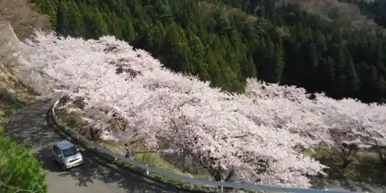
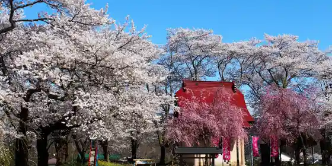
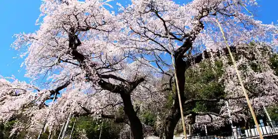
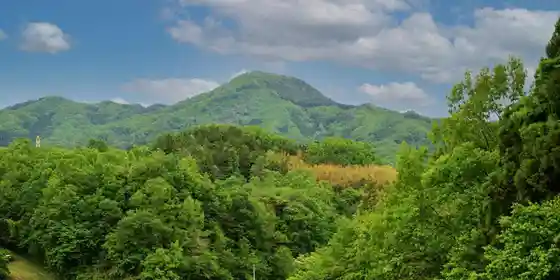

Kawamata Shamo
Kawamata, Fukushima · 024-566-5860 · Official / source link
Choju Izumi no Sakura Kaido
Kawamata, Fukushima · 024-566-2111 · Official / source link

Hataori Shrine no Kote Hime Sakura
Kawamata, Fukushima · 024-566-2111 · Official / source link

Josen Tera no Shidarezakura
Kawamata, Fukushima · 024-566-2111 · Official / source link

Otsu Zaru Kiku Sono
Kawamata, Fukushima · 024-566-2111 · Official / source link
Megami Yama
Kawamata, Fukushima · 024-565-4227 · Official / source link

Kuchibuto Yama
Kawamata, Fukushima · 024-566-5900 · Official / source link
Choju Yama, Taro Boyama
Kawamata, Fukushima · 024-566-3297 · Official / source link
Hanatsuka Yama
Kawamata, Fukushima · 024-566-2111 · Official / source link
Taka Ta Ishiyama
Kawamata, Fukushima · 024-563-2054 · Official / source link
Fukuzawa Hayama
Kawamata, Fukushima · 024-565-3625 · Official / source link
Kawamataorimo no Tenjikan Karariko Kan
Kawamata, Fukushima · 024-565-4889 · Official / source link
Kawamata Meihin Kan Shirukupia
Kawamata, Fukushima · 024-566-5253 · Official / source link
Kawamata (Hayama no Mori Art Museum)
Kawamata, Fukushima · 024-566-3367 · Official / source link
Akiyama no Koma Zakura
Kawamata, Fukushima · 024-566-2111 · Official / source link
Roadside Station Kawamata Oashisu in Shirukurodo
Kawamata, Fukushima · 024-565-4889 · Official / source link
Kawamata Chuo Park
Kawamata, Fukushima · 024-566-2111 · Official / source link
Haneda Kasuga Shrine no Dai Fuji
Kawamata, Fukushima · 024-565-3110 · Official / source link
Kasuga Shrine
Kawamata, Fukushima · 024-566-2111 · Official / source link